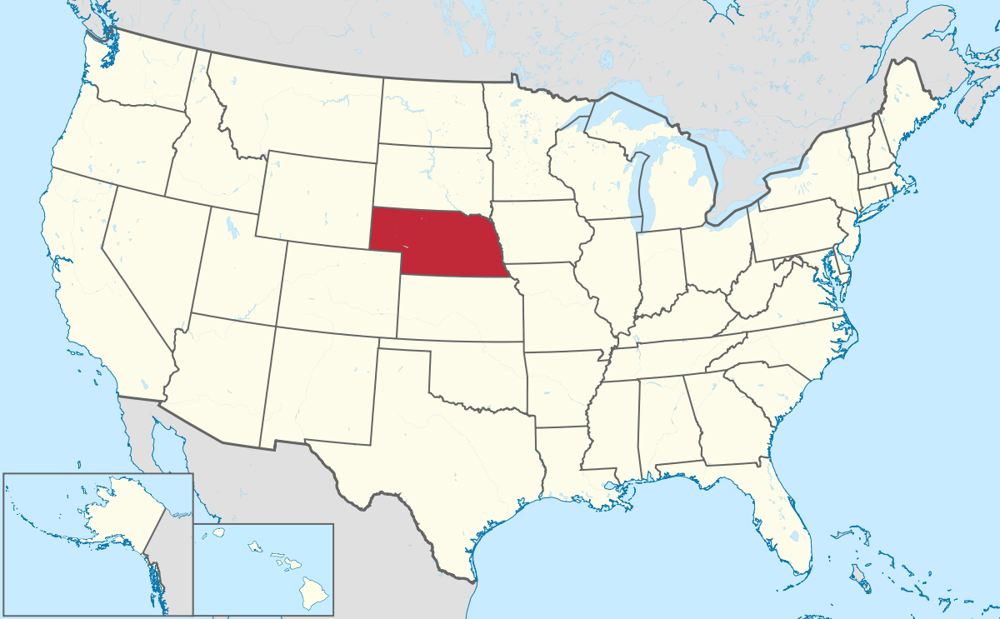
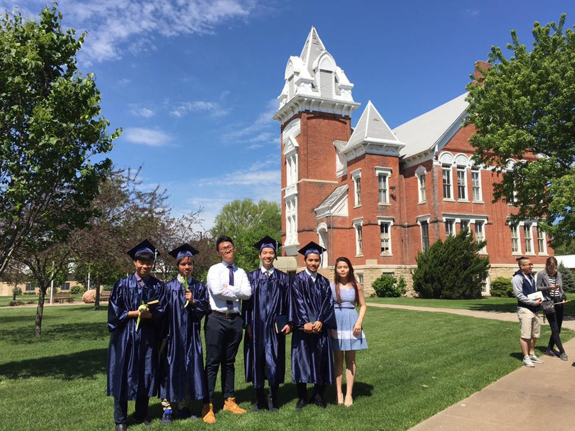
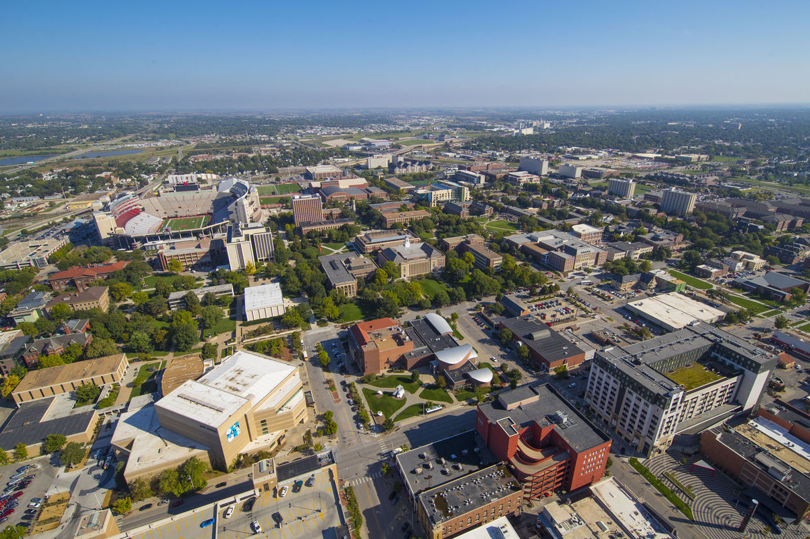

- My Journey -
1998 - And so it begins...
This is when my journey begins. I was born in a small town in Hanoi, Vietnam. Although the city's view and people were simple, I felt joyous and lucky everyday since I was born in this beautiful city and surrounded with love from my family.
2013 - First Big Achievement
"Mom, Dad, I got into Nguyen Hue!!!! I am crying..." I felt the exact same moment when I found out on school website that I have been able to attend one of the most prestigious high school in the country. That moment was one of the most memorable moments ever, in my opinion. Everybody, including my 6th-grade sibling who is always cheerful whenever I achieve something great academically, was congratulating me.
Fun fact: I was actually the first person in my big family to attend a great high school in Vietnam. I felt fortunate, yet again, since this high school strengthened my mentality and academic skills even more, especially Mathematics (I guess it was because I was a Mathematics student in Nguyen Hue).
2014 - A New Milestone
Every single day, I was obssessed of watching YouTube about the life of a student in the U.S., Canada, or the Europe. Nevertheless, despite the addiction to those videos, I never thought that I could go that far, since I was always in my country.
Until the second semester in Nguyen Hue, when my mom asked, "Do you want to go beyond this place to explore and develop yourself as a student?". At first, I was so confused and wondered what she was talking about. She then added, "DO YOU WANT TO STUDY ABROAD?". I was so surprised, then said, "Yes, of course, mom. But how?" She just sent me multiple high schools and researched with her. Eventually, I chose Nebraska Christian High School, which was and is always a great boarding school for international students who wants to develop themselves as better in both school and social life.
I was so grateful of how my family has supported me throughout my academic journey. There is nothing to describe how I felt at the time I landed in the U.S. for the first time. So, so thankful for them.
Guess who I am :)
2016 - Becoming a Husker
 Once again, a new milestone in my early life has happened. I am filled with gratitude of everyone who has helped me achieve this huge landmark. I then decided to be a Mathematics student, since, well, I love Math since I was little and achieved several accomplishments within my region. However, during the study in UNL, I fell in love with creating websites and each function of some great web applications. Despite the devotion in Mathematics, I really want to challenge myself towards a new subject: Web Development.